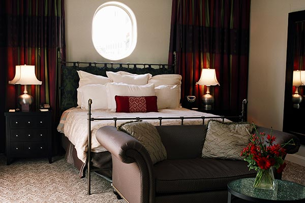
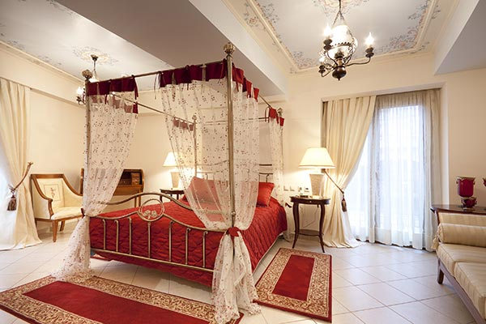
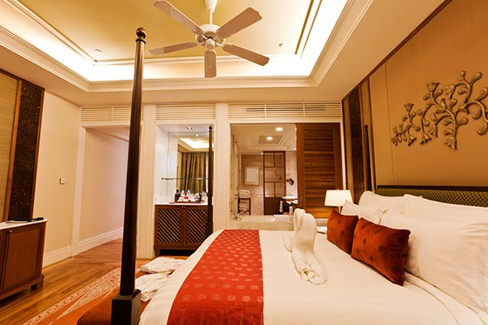

Guest Rooms
Our guest rooms feature sumptuous classic furnishings that evoke visions of London’s rich and long-standing tradition of royalty. While our rooms are decked out in classic design, they each have a modern flair, and contain all the modern comforts expected in today’s luxury hotels. We’ve named our rooms for the notable public squares and circuses around which the West End is laid out.
Piccadilly

Designed to be our economy room, for those who will be spending more time seeing the sights, and less time hitting the hay. The Piccadilly room has a smaller footprint, but maintains the accommodations of some of our more deluxe rooms.
Cambridge

This room features a king bed, with a Comfort-Plus mattress, covered in 400-thread Egyptian cotton sheets. The Cambridge room is decorated in tasteful and warm muted tones, that are soothing on the eyes and senses.
Westminster

This room is available with a king or two double beds, and is furnished with our Premiere London collection – the softest and most luxurious bed and bath linens.
Oxford

Our Oxford suites are some of the prettiest and most romantic rooms around and are perfect for honeymoons. All of these feature canopy beds, lots of windows, and spare no modern comfort or convenience, including a TLX media system.
Victoria

Traveling with the family? Our spacious Victoria suites, with breathtaking views of the city, are the perfect choice. These corner rooms are furnished with a king or two double beds, and have a sofa with a comfortable pullout bed.
Manchester

The Manchester Executive Suite, is popular with business travelers the world over. These two-room suites feature a king-size bed, living room with leather recliner, full-sized executive desk, and leather desk chair.